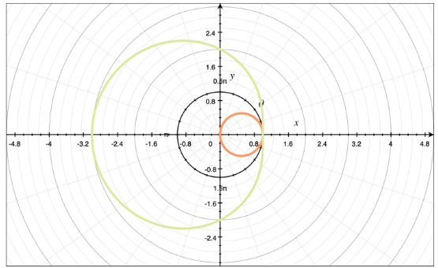

Calculus II, Pt. 3
Parametric Curves
So far, we have been dealing with rectangular equations, which usually give $y$ in terms of $x$. This section introduces parametric equations, with which we have two seperate equations to define $x$ and $y$, both in terms of a parameter value $t$, such as:
$x = cos ~t$
$y = sin ~t$
Given a parametric curve where one function is defined by an equation for $x$ and an equation for $y$, we can eliminate the parametric value in a few different ways:
- Solve each equation for the parameter $t$, then set the equations equal to one another
- Solve one equation for the parameter $t$, then plug that value into the second equation
- Solve each equation for part of an identity, then plug both values into the identity
Example:
Using method 2, eliminate the parameter from the following equations:
$x = 2t^2 + 6$
$y = 5t$
First, we'll solve the easier one:
$t = \frac{y}{5}$
Plugging this into the equation for $x$:
$x = 2 \left( \frac{y}{5} \right)^2 + 6$
$x = \frac{2y^2}{25} + 6$
$25x = 2y^2 + 150$
$25x - 2y^2 = 150$
Example:
Using method 3, eliminate the parameter from:
$x = e^t$
$y = e^{4t}$
$y = e^{ab}$ is the same as $y = (e^a)^b$. We can take $y = e^{4t}$ and rewrite it as $y = (e^t)^4$. Since $x = e^t$, we can substitute $x$ into $y = (e^t)^4$ for $e^t$.
$y = x^4$
Because we have $e^t$ in the original equation, which is greater than $0$ for all $t$, we require that $x \gt 0$.
Derivative of a Parametric Curve
Given a parametric curve where our function is defined by equations $x = f(t)$ and $y = g(t)$, we calculate the derivative as:
$\frac{dy}{dx} = \frac{dy/dt}{dx/dt}$
Example:
Find the derivative of the parametric curve for:
$x = 3t^4 - 6$
$y = 2e^{4t}$
$\frac{dy}{dt} = 8e^{4t}$
$\frac{dx}{dt} = 12t^3$
$\frac{dy}{dx} = \frac{8e^{4t}}{12t^3} = \frac{2e^{4t}}{3t^3}$
To find the second derivative of a parametric curve, we find the first derivative using:
$\frac{dy}{dx} = \frac{dy/dt}{dx/dt}$
And then plug it into this formula:
$\frac{d^2y}{dx^2} = \frac{ \frac{d}{dt} \left( \frac{dy}{dx} \right) }{ \frac{dx}{dt} }$
Tangent Line to the Parametric Curve
We use the same point-slope formula to define the equation of the tangent line to the parametric curve that we used to define the tangent line to a cartesian curve.
$y - y_1 = m(x - x_1)$
where $m$ is the slope and $(x,y)$ is the point where the tangent line intersects the curve.
To find the slope, we use the formula for the derivative of a parameteric curve:
$m = \frac{dy}{dx} = \frac{dy/dt}{dx/dt}$
Example:
Find the tangent line(s) to the parametric curve represented by:
$x = t^5 - 4t^3$
$y = t^2$
$at ~(0,4)$
$\frac{dx}{dt} = 5t^4 - 12t^2$
$\frac{dy}{dt} = 2t$
$\frac{dy}{dx} = \frac{2t}{5t^4 - 12t^2}$
We need to plug the given point into the derivative we just found, but the given point is a Cartesian point, and to plug the given point into the derivative, we need to convert it from a cartesian point into a parametric value for $t$. To do this, we'll plug the given point into both of the original parametric equations, and look for matching solutions.
$x = t^5 - 4t^3$
$0 = t^5 - 4t^3$
$0 = t^3(t^2 - 4)$
$y = t^2$
$4 = t^2$
$t = \pm 2$
$t = 0, \pm 2$
For a parameter to be valid, it has to be a solution in both equations, so $t = \pm 2$.
To solve for each tangent line, we'll plug $t = \pm 2$ into the derivative equation we found above. For $t=2$:
$f(2) = \frac{2(2)}{5(2)^4 - 12(2)^2}$
$f(2) = \frac{4}{80-48} = \frac{1}{8}$
For $t=-2$,
$t(-2) = \frac{2(-2)}{5(-2)^4 - 12 - (-2)^2}$
$f(-2) = \frac{-4}{80-48} = -\frac{1}{8}$
Finally, plugging the slopes we found and the given point $(0,4)$ into the point-slope formula for the equation of the line, we get the following two tangent lines:
$y - y_1 = m(x - x_1)$
$y - 4 = \frac{1}{8}(x - 0)$
$y = \frac{1}{8}x + 4$
$y - 4 = - \frac{1}{8}(x - 0)$
$y = - \frac{1}{8}x + 4$
Area Under a Parametric Curve
We'll find the area under the curve using the integral formula:
$A = \int_{\alpha}^{\beta} y(t) x'(t) ~dt$
$y(t)$ is $g(t)$, and $x'(t)$ is the derivative of $x = f(t)$. This will provide the function that represents area under the curve, but to find a number value, we'll need to use a definite integral by defining an interval for the area.
Example:
Find the function that defines the area under the curve for:
$x = 2 \theta - cos ~\theta$
$y = 2 + sin ~\theta$
We treat $\theta$ just like we did $t$ in previous examples.
$x'(\theta) = 2 + sin ~\theta$
Plugging $y(\theta)$ and $x'(\theta)$ into the area formula:
$A = \int (2 + sin ~\theta)(2 + sin ~\theta) ~d \theta$
$A = \int 4 + 4 ~sin ~\theta + sin^2 ~\theta ~d \theta$
Using the formula:
$sin^2 \theta = \frac{1}{2}(1 - cos ~2 \theta)$
we'll make a substitution for $sin^2 \theta$.
$A = \int 4 + 4 ~sin ~\theta + \frac{1}{2}(1 - cos ~2 \theta) ~d \theta$
$A = \int 4 + 4 ~sin ~\theta + \frac{1}{2} - \frac{1}{2} ~cos 2 \theta ~d \theta$
$A = \int \frac{9}{2} + 4 ~sin ~\theta - \frac{1}{2} ~cos ~2 \theta ~d \theta$
$A = \int \frac{9}{2} ~d \theta + \int 4 ~sin~\theta ~d \theta - \int \frac{1}{2} ~cos 2~ \theta ~d \theta$
$A = \frac{9}{2} \theta - 4 ~cos ~\theta - \frac{1}{4} ~sin ~2 \theta$
Arc Length of a Parametric Curve
The arc length of a parametric curve over the interval $\alpha \le t \le \beta$ is given by:
$L = \int_{\alpha}^{\beta} \sqrt{ \left( \frac{dx}{dt} \right)^2 \left( \frac{dy}{dt} \right)^2 } dt$
Example:
Find the length of the parametric curve represented by:
$x = 5 ~sin ~t$
$y = 5 ~cos ~t$
$\text{for } 0 \le t \le 2 \pi$
We need to find the derivatives of the parametric equations.
$\frac{dx}{dt} = 5 ~cos ~t$
$\frac{dy}{dt} = 5 ~sin ~t$
The limits of integration are given in the problem, so we go ahead and plug everything into the arc length formula.
$L = \int_0^{2 \pi} \sqrt{ (5 ~cos ~t)^2 + (-5 ~sin ~t)^2 } ~dt$
$L = \int_0^{2 \pi} \sqrt{ 25 ~cos^2 t + 25 ~sin^2 t } ~dt$
$L = \int_0^{2 \pi} \sqrt{ 25 (cos^2 t + sin^2 t) } ~dt$
Since $cos^2t + sin^2t = 1$, we get:
$L = \int_0^{2 \pi} \sqrt{25(1)} dt$
$L = \int_0^{2 \pi} 5 dt$
$L = 5t \bigg|_0^{2 \pi}$
$L = 5(2 \pi) - 5(0)$
$L = 10 \pi$
Volume of Revolution with Parametric Curves
We can find the volume of revolution generated by revolving the area enclosed by two parametric curves.
For rotation around the x-axis:
$V_x = \int_{\alpha}^{\beta} \pi y^2 \frac{dx}{dt} ~dt$
For rotation around the y-axis:
$V_x = \int_{\alpha}^{\beta} \pi x^2 \frac{dy}{dt} ~dt$
Example:
Find the volume of revolution of the parametric curve for:
$x = 3t^2 + 4$
$y = t^4$
$\text{for } 0 \le t \le 2, \text{ rotated around the y-axis}$
$\frac{dy}{dt} = 4t^3$
$V_y = \int_0^2 \pi (3t^2 + 4)^2 (4t^3) ~dt$
$V_y = 4 \pi \int_0^2 t^3 (3t^2 + 4)^2 ~dt$
$V_y = 4 \pi \int_0^2 t^3 (9t^4 + 24t^2 + 16) ~dt$
$V_y = 4 \pi \int_0^2 9t^7 + 24t^5 + 16t^3 dt$
$V_y = 4 \pi \left( \frac{9t^8}{8} + \frac{24t^6}{6} + \frac{16t^4}{4} \right) \bigg|_0^2$
$V_y = 4 \pi \left( \frac{9t^8}{8} + 4t^6 + 4t^4 \right) \bigg|_0^2$
$V_y = 4 \pi \left[ \frac{9(2)^8}{8} + 4(2)^6 + 4(2)^4 \right] - 4 \pi \left[ \frac{9(0)^8}{8} + 4(0)^6 + 4(0)^4 \right] $
$V_y = 4 \pi [9(2)^5 + 256 + 64]$
$V_y = 2432 \pi$
Polar Curves
In rectangular coordinates $(x,y)$, the x-value tells how far to move to the left or right along the x-axis, and the y-value tells how far to move up or down the vertical axis. In polar coordinates $(r, \theta)$, the $r$ value tells how far to move in a straight line from the origin, and $\theta$ describes the angle between the positive direction of the x-axis and the point $(r, \theta)$.
To convert rectangular coordinates to polar, we use the following conversion formulas:
$x^2 + y^2 = r^2$
$x = r ~cos ~\theta$
$x = r ~sin ~\theta$
Example:
Convert this rectangular equation to polar:
$x^2 - 3x + y^2 + 2y = 0$
Use $r^2 = x^2 + y^2$.
$x^2 + y^2 - 3x + 2y = 0$
$r^2 - 3x + 2y = 0$
Then use $x = r ~cos ~\theta$ and $y = r ~sin ~\theta$.
$r^2 - 3r ~cos ~\theta + 2r ~sin ~\theta = 0$
$r^2 = 3r ~cos ~\theta - 2r ~sin ~\theta$
$r = 3 ~cos ~\theta - 2 ~sin ~\theta$
Example:
Convert the polar equation $r = 3 ~cos ~\theta$ to rectangular:
$x = r ~cos ~\theta$
$cos ~\theta = \frac{x}{r}$
$r = 3 \left( \frac{x}{r} \right)$
$r^2 = 3x$
Then use $r^2 = x^2 + y^2$.
$x^2 + y^2 = 3x$
$x^2 - 3x + y^2 = 0$
Distance Between Polar Points
To find the distance between two polar coordinates, we have two options:
Option 1. Convert to cartesian coordinates using:
$x = r ~cos ~\theta$
$y = r ~sin ~\theta$
and then use the distance formula from the cartesian coordinate system:
$D = \sqrt{ (x_2 - x_1)^2 - (y_2 - y_1)^2 }$
Option 2. Use the distance formula from the polar coordinate system:
$D = \sqrt{ r_1^2 + r_2^2 - 2 r_1 r_2 ~cos (\theta_1 - \theta_2)}$
Calculus with Polar Curves
Vertical and Horizontal Tangent Lines to the Polar Curve
We find equations of the vertical and horizontal tangent lines to a polar curve by the following steps:
Step 1. Convert the polar equation into rectangular equations using the conversion formulas $x = r ~cos ~\theta$ and $y = r ~ sin ~\theta$.
Step 2. Find the slope of the tangent line $m$ using the formula:
$m = \frac{dy}{dx} = \frac{dy/~d \theta}{dx/~d \theta}$
Step 3. Find horizontal tangent lines:
- Set $m = 0$ and solve for $\theta$
- Plug these values of $\theta$ into the original polar equation to find associated values of $r$
- Pair up values of $r$ and $\theta$ to find the coordinate points where the polar equation has horizontal tangent lines
Step 4. Find vertical tangent lines
- Find the values of $\theta$ where $m$ is undefined
- Plug these values of $\theta$ into the original polar equation to find associated values of $r$
- Pair up values of $r$ and $\theta$ to find the coordinate points where the polar equation has vertical tangent lines
Example:
Find the points on the polar curve where the graph of the tangent line is vertical with horizontal for $r = 2 ~sin ~\theta$.
We'll convert to a rectangular equation using $x = r ~cos ~\theta$ and $y = r ~sin ~\theta$:
$x = 2 ~sin ~\theta ~cos ~\theta$
$y = 2 ~sin ~\theta ~sin ~\theta$
$y = 2 ~sin^2 \theta$
We'll find the derivatives $dy/d \theta$ and $dx/d \theta$.
$\frac{dy}{~d \theta} = 4 ~sin ~\theta ~cos ~\theta$
$\frac{dx}{~d \theta} = 2(2 ~sin ~\theta ~cos ~\theta)$
Because $2 ~sin ~\theta ~cos ~\theta = sin(2 \theta)$:
$\frac{dy}{~d \theta} = 2 ~sin ~\theta$
$\frac{dx}{~d \theta} = 2 ~cos ~\theta ~cos ~\theta - 2 ~sin ~\theta ~sin ~\theta$
$\frac{dx}{~d \theta} = 2 (cos^2 \theta - sin^2 \theta)$
And because $cos^2 \theta - sin^2 \theta = cos(2 \theta)$:
$\frac{dx}{~d \theta} = 2 ~cos(2 \theta)$
Plugging both derivatives into the formula for $\frac{dy}{dx}$:
$\frac{dy}{dx} = \frac{2 ~sin(2 \theta)}{2 ~cos(2 \theta)} = \frac{sin(2 \theta)}{cos(2 \theta)}$
Horizontal tangent lines exist where $\frac{dy}{dx} = 0$, and in order for this to happen, the numerator must be $0$.
$sin(2 \theta) = 0$
$2 \theta = 0$
$\theta = 0$
or
$2 \theta = \pi$
$\theta = \frac{\pi}{2}$
To find the $r$ values associated with these $\theta$ values, plug them back into the original polar equation.
$r = 2 ~sin ~\theta$
$r = 2 ~sin(0)$
$r = 2(0)$
$r = 0$
and
$r = 2 ~sin ~\theta$
$r = 2 ~sin \left( \frac{\pi}{2} \right)$
$r = 2(1)$
$r = 2$
We can say that $r = 2 ~sin ~\theta$ has horizontal tangent lines at $(0,0)$ and $(2, \frac{\pi}{2})$.
Vertical tangent lines exist where $\frac{dy}{dx}$ is undefined. In order for $\frac{dy}{dx}$ to be undefined, the denominator must be $0$.
$cos(2 \theta) = 0$
$2 \theta = \frac{\pi}{2}$
$\theta = \frac{\pi}{4}$
or
$2 \theta = \frac{3 \pi}{2}$
$\theta = \frac{3 \pi}{4}$
To find the r-values associated with these $\theta$ values, we'll plug them back into the original polar equation:
$r = 2 ~sin ~\theta$
$r = 2 ~sin \frac{\pi}{4}$
$r = \sqrt{2} \cdot \frac{\sqrt{2}}{2}$
$r = \sqrt{2}$
and
$r = 2 ~sin ~\theta$
$r = 2 ~sin \left( \frac{3 \pi}{4} \right)$
$r = 2 \cdot \left( - \frac{\sqrt{2}}{2} \right)$
$r = - \sqrt{2}$
We can say that $r = 2 ~sin ~\theta$ has vertical tangent lines at $\left( \sqrt{2}, \frac{\pi}{4} \right)$ and $\left( - \sqrt{2}, \frac{3 \pi}{4} \right)$.
Intersection of Polar Curves
To find the points of intersection for two polar curves:
- Solve both curves for $r$
- Set the two curves equal to each other
- Solve for $\theta$
We might get more or fewer intersection points than actually exist. To verify that we've found all intersection points, and only real intersection points, we can graph our curves and visually confirm. Converting polar equations to rectangular equations ensures that we find all points of intersection, and only real points of intersection.
Example:
Find the points of intersection of the following polar curves:
$r = sin ~\theta$
$r = 1 - sin ~\theta$
To find the points of intersection, we'll set them equal to each other and solve for $0$:
$sin ~\theta = 1 - sin ~\theta$
$2 ~sin ~\theta = 1$
$sin ~\theta = \frac{1}{2}$
$\theta = \frac{\pi}{6}, \frac{5 \pi}{6}$
To find the values of $r$ that are associated with these values of $\theta$, we'll plug the $\theta$ values back into either of the original polar curves.
$r = sin ~\theta$
For $\theta \frac{\pi}{6}$,
$r = sin \frac{\pi}{6}$
$r = \frac{1}{2}$
For $\theta = \frac{5 \pi}{6}$,
$r = sin \frac{5 \pi}{6}$
$r = \frac{1}{2}$
Example:
Find the points of intersection of the following polar curves, using rectangular notation:
$r = cos ~\theta$
$r = 2 - cos ~\theta$
$x = r ~cos ~\theta$
$cos ~\theta = \frac{x}{r}$
Plugging $\frac{x}{r}$ into the given polar equations for $cos ~\theta$, we get:
$r = cos ~\theta$
$r = \frac{x}{r}$
$x = r^2$
$r = 2 - cos ~\theta$
$r = 2 - \frac{x}{r}$
$x = 2r - r^2$
We've gotten rid of $\theta$, but now need to get rid of $r$, which we'll do using the conversion formula
$r^2 = x^2 + y^2$
$r = \sqrt{x^2 + y^2}$
$x = r^2$
$x = x^2 + y^2$
$x^2 + y^2 - x = 0$
and
$x = 2r - r^2$
$x = 2 \sqrt{x^2 + y^2} - (x^2 + y^2)$
$x = 2 \sqrt{x^2 + y^2} - x^2 - y^2$
$x^2 + y^2 - 2 \sqrt{x^2 + y^2} + x = 0$
Since both of our rectangular equations are equal to $0$, we can set them equal to each other.
$x^2 + y^2 - x = x^2 + y^2 - 2 \sqrt{x^2 + y^2} + x$
$-x = -2 \sqrt{x^2 + y^2} + x$
$-2 \sqrt{x^2 + y^2} = -2x$
$\sqrt{x^2 + y^2} = x$
Since we found that $x^2 + y^2 = x$ when we were converting $r = cos ~\theta$ to rectangular coordinates, we can say:
$\sqrt{x} = x$
$x = x^2$
$x^2 - x = 0$
$x(x-1) = 0$
$x = 0,1$
To find the y-values associated with these x-values, we'll plug them into $x^2 + y^2 = 0$.
For $x = 0$:
$0^2 + y^2 - 0 = 0$
$y = 0$
For $x = 1$:
$1^2 + y^2 - 1 = 0$
$y = 0$
Putting our values together, we know the points of intersection are $(0,0)$ and $(1,0)$. We need to convert these rectangular coordinate points back into polar coordinates.
$r = \sqrt{x^2 + y^2}$
$\theta = tan^{-1} \left( \frac{y}{x} \right)$
Plugging the rectangular coordinate points into these formulas, we get:
For $(0,0)$:
$r = \sqrt{0^2 + 0^2} = 0$
$\theta = tan^{-1}\left( \frac{0}{0} \right)$
Since the equation for $\theta$ is undefined, the rectangular point $(0,0)$ cannot be defined in polar coordinates and therefore isn't a polar point of intersection.
For $(1,0)$:
$r = \sqrt{1^2 + 0^2}$
$r = 1$
$\theta = tan^{-1} \left( \frac{0}{1} \right)$
$\theta = 0$
The only point of intersection of the given polar curves is the polar point $(1,0)$

Sequences
A sequence is a list of terms in a specific order, and is denoted by $a_n$. A series is the sum of a sequence, and is denoted by $\sum_{n=b}^c a_n$.
A sequence always either converges or diverges. It converges if the limit of the sequence exists as $n \to \infty$. If the limit of the sequence does not exist as $n \to \infty$, we say it diverges.
Example:
Say whether or not the following sequence converges and find the limit if it does.
$a_n = \frac{sin^2(n)}{3^n}$
We can use the squeeze theorem, and start by evaluating the numerator of $a_n$. We know the sine function exists between $-1$ and $1$, so we can say that:
$-1 \le sin(n) \le 1$
We also know that when the sine function is squared, it only exists between $0$ and $1$.
$0 \le sin^2(n) \le 1$
We can multiply the above inequality by $\frac{1}{3^n}$ to make it match our original sequence.
$(0 \le sin^2(n) \le 1) \frac{1}{3^n}$
$\frac{0}{3^n} \le \frac{sin^2(n)}{3^n} \le \frac{1}{3^n}$
$0 \le \frac{sin^2(n)}{3^n} \le \frac{1}{3^n}$
Now we have our original sequence bounded by two values. When we take the limit as $n \to \infty$, $\frac{1}{3^n}$ on the right side of the inequality will approach $0$.
$0 \le \lim \limits_{n \to \infty} \frac{sin^2(n)}{3^n} \le \lim \limits_{n \to \infty} \frac{1}{3^n}$
$0 \le \lim \limits_{n \to \infty} \frac{sin^2(n)}{3^n} \le 0$
Since the limit of the sequence is bounded by two real numbers, this means our limit exists and our sequence converges. Finally, we can take the limit of our sequence as it appraoches infinity.
$\lim \limits_{n \to \infty} \frac{sin^2(n)}{3^n} = \frac{k}{\infty}$
where $k$ represents the constant from $0$ to $1$ that we derived from the inequality $0 \le sin^2(n) \le 1$. We get $\infty$ in the denominator because as $n \to \infty$, $3^n$ will approach $\infty$. Since we have a constant in the numerator and an infinitely large value in the denominator, we know that:
$\lim \limits_{n \to \infty} \frac{sin^2(n)}{3^n} = 0$
We conclude that the sequence $a_n = \frac{sin^2(n)}{3^n}$ converges and that its limit as $n \to \infty = 0$
$\lim \limits_{n \to \infty} \frac{sin^2(n)}{3^n} = \lim \limits_{n \to \infty} a_n = 0$
Increasing, Decreasing, and Non-Monotonic
If a sequence is monotonic, it is always increasing or always decreasing. The fastest way to make a guess about the behavior of a sequence is to calculate the first few terms and see if it is increasing, decreasing, or non-monotonic.
Partial Sums
A normal series is given by $\sum_{n=1}^{\infty} a_n$, where $a_n$ is a sequence whose $n$ values increase by increments of $1$. A partial sums sequence is called $s_n$, and its $n$ values increase by additive increments. A normal series is related to its corresponding partial sums sequence by:
$\sum_{n=1}^{\infty} a_n = \lim \limits_{n \to \infty} s_n$
This allows us to work backwards from the partial sums sequence to the original series $a_n$.
Example:
Find the sum of the sequence of the partial sums for $s_n = 1 - 2(0.4)^n$
$\sum_{n=1}^{\infty} a_n = \lim \limits_{n \to \infty} 1 - 2(0.4)^{\infty}$
When $0.4$ is raised to the power of $\infty$, it will eventually approach $0$.
$\sum_{n=1}^{\infty} a_n = 1 - 2(0) = 1$
Geometric Series
Geometric series are series in which the ratio of successive terms is constant. We multiply each term by the same number to get the next term. For example:
$\frac{1}{3}, \frac{1}{9}, \frac{1}{27}, \ldots$
The standard form of a geometric series is $\sum_{n=1}^{\infty} ar^{n-1}$ or $\sum_{n=0}^{\infty}$. Given either form, if $|r| \lt 1$ then the series converges. If $r \ge 1$, then the series diverges. For the sum of a geometric series, we can use the values of $a$ and $r$ plus the following formulas:
$\sum_{n=1}^{\infty} ar^{n-1} = \frac{a}{1-r}$
$\sum_{n=0}^{\infty} ar^n = \frac{a}{1-r}$
Example:
Calculate the sum of the following geometric series:
$\sum_{n=0}^{\infty} \frac{2^{n-1}}{3^n}$
Answer:
Via simple exponential rules:
$\sum_{n=0}^{\infty} \frac{2^{n-1}}{3^n} = \sum_{n=0}^{\infty} \frac{2^n 2^-1}{3^n}$
$\sum_{n=0}^{\infty} \frac{2^{n-1}}{3^n} = \sum_{n=0}^{\infty} 2^{-1} \left( \frac{2^n}{3^n} \right)$
$\sum_{n=0}^{\infty} \frac{2^{n-1}}{3^n} = \sum_{n=0}^{\infty} \frac{1}{2} \left( \frac{2}{3} \right)^n$
Now that we have the series in the right form, we can say that:
$\sum_{n=0}^{\infty} ar^n = \frac{1}{2} \left( \frac{2}{3} \right)^n$
where $a = \frac{1}{2}$ and $r = \frac{2}{3}$. The sum of the geometric series is given by:
$\sum_{n=0}^{\infty} ar^{n} = \frac{a}{1-r}$
$\sum_{n=0}^{\infty} \frac{1}{2} \left( \frac{2}{3} \right)^n = \frac{1/2}{1 - 2/3}$
$= \frac{1/2}{3/3 - 2/3}$
$= \frac{1/2}{1/3}$
$= \frac{1}{2} \cdot \frac{3}{1}$
$= \frac{3}{2}$
We could also have found the sum by expanding the series through its first few terms and identifying values for $a$ and $r$.
Telescoping Series
Telescoping series are series in which all but the first and last terms cancel out. To determine whether a series is telescoping, we'll need to calculate at least the first few terms. If we get a real number for $s$ as the limit as $n \to \infty$ of $s_n$, we conclude that the series converges; otherwise, diverges.
Example:
$\sum_{n=1}^{\infty} \frac{1}{n} - \frac{1}{n+1}$
$s = \lim \limits_{n \to \infty} s_n = \sum_{n=1}^{\infty} \frac{1}{n} - \frac{1}{n+1}$
$ s = \lim \limits_{n \to \infty} \left[ \left( 1 - \frac{1}{2} \right) + \left( \frac{1}{2} - \frac{1}{3} \right) + \left( \frac{1}{3} - \frac{1}{4} \right) + \left( \frac{1}{4} - \frac{1}{5} \right) + \ldots + \left( \frac{1}{n} - \frac{1}{n+1} \right) \right] $
We see that the second half of the first term will cancel with the first half of the second term, etc., so the series is telescoping. Cancelling everything but the first half of the first term and the second half of the last term gives an expression for the series of partial sums.
$s = \lim \limits_{n \to \infty} s_n = \lim \limits_{n \to \infty} 1 - \frac{1}{n+1}$
Now to see if the series converges as $n \to \infty$:
$s = \lim \limits_{n \to \infty} 1 - \frac{1}{n+1}$
$s = \lim \limits_{n \to \infty} 1 - \frac{1/n}{\frac{n}{n} + \frac{1}{n}}$
$s = \lim \limits_{n \to \infty} 1 - \frac{1/n}{1 + \frac{1}{n}}$
$s = 1 - \frac{0}{1+0}$
$s = 1 - 0 = 1$
The sum of a telescoping series is:
$\sum_{n=1}^{\infty} a_n = \lim \limits_{n \to \infty} s_n$
Limit vs. Sum of the Series
Sometimes it is easy to forget that there is a difference between the limit of an infinite series and the sum of an infinite series. The limit is the value the series' terms are approaching as $n \to \infty$. The sum of a series is the value of all the series' terms added together.
Example:
Find the limit and sum of the series:
$\sum_{n=1}^{\infty} \frac{2^{3n}}{64^{n/2}}$
Answer:
$= \lim \limits_{n \to \infty} \frac{(2^3)^n}{(64^{1/2})^n}$
$= \lim \limits_{n \to \infty} \frac{8^n}{\sqrt{64}^n}$
$= \lim \limits_{n \to \infty} \frac{8^n}{8^n}$
$= \lim \limits_{n \to \infty} 1 = 1$
To find the sum, we'll expand the series:
$\sum_{n=1}^{\infty} \frac{2^{3n}}{64^{n/2}} = \frac{2^{3(1)}}{64^{1/2}} + \frac{2^{3(2)}}{64^{2/2}} + \ldots$
$= \frac{2^3}{\sqrt{64}} + \frac{2^6}{\sqrt{64}^2} + \ldots$
$= \frac{8}{8} + \frac{64}{64} + \ldots$
$= 1 + 1 + \ldots = \infty$
Basic Convergence Tests
Integral Test
The integral test for convergence is only valid for series that are:
- Positive (all terms are positive)
- Decreasing (each term is less than the one prior)
- Continuous (defined everywhere in its domain)
- Estimate the total sum by calculating a partial sum for the series
- Use the comparison test to say whether the series converges or diverges
- Use the integral test to solve for the remainder
- The series converges absolutely if $L \lt 1 $
- The series diverges if $L \gt 1$ or if or $L$ is infinite
- The test is inconclusive if $L=1$
- The series converges absolutely if $L \lt 1$
- The series diverges if $L \gt 1$ or $L$ is infinite
- The test is inconclusive if $L = 1$
- The series must be decreasing, $b_n \ge b_{n+1}$
- The limit of the series must be zero: $\lim \limits_{n \to \infty} b_n = 0$
- the series converges absolutely if $L \lt 1$
- the series diverges if $L \gt 1$ or $L$ is infinite
- the test is inconclusive if $L = 1$
Given the series $\sum_{n=1}^{\infty} a_n$, we set $f(x) = a_n$ and evaluate the integral $\int_1^{\infty} f(x) ~dx$.
If the value of the integral converges to a real number, then the series also converges. If it diverges to infinity, then the series also diverges. To confirm whether the series is positive, decreasing, and continuous, we'll find the first several terms.
$\frac{3}{1^2} + \frac{3}{2^2} + \frac{3}{3^2} + \frac{3}{4^2}$
$= 3 + \frac{3}{4} + \frac{1}{3} + \frac{3}{16}$
The series is positive, decreasing, and continuous. We can use the integral test to say whether the series converges or diverges.
$\int_1^{\infty} \frac{3}{x^2} ~dx$
$= \int_1^{\infty} 3x^{-2} ~dx$
$= \frac{3x^{-1}}{-1} \bigg|_1^{\infty}$
$= -3x^{-1} \bigg|_1^{\infty}$
$= - \frac{3}{x} \bigg|_1^{\infty}$
$= - \frac{3}{\infty} - \left( - \frac{3}{1} \right)$
$= 0 + 3 = 3$
Since the integral converges to a real number, we know that the series also converges. Note that the value found for the integral is not necessarily equal to the limit or sum of the squares.
P-Series Test
If we have a series $a_n$ in the form $a_n = \sum_{n=1}^{\infty} \frac{1}{n^p}$, then we can use the p-series test for convergence to say whether or not $a_n$ will converge. The test says that $a_n$ will converge when $p \gt 1$, and diverge when $p \le 1$.
Example:
Use the p-series test to say whether or not the following series converges:
$\sum_{n=1}^{\infty} \frac{a}{\sqrt{n}}$
We need the format of the series to match the format above:
$\sum_{n=1}^{\infty} \frac{a}{\sqrt{n}} = \sum_{n=1}^{\infty} \frac{1}{n^{1/2}}$
The test tells us that $a_n$ diverges when $p \le 1$, so we can say that this series diverges.
Example:
Use the p-series test to say whether or not the following series converges:
$\sum_{n=1}^{\infty} \frac{1}{\sqrt[3]{n^4}}$
$\sum_{n=1}^{\infty} \frac{1}{\sqrt[3]{n^4}} = \sum_{n=1}^{\infty} \frac{1}{(n^4)^{1/3}} = \sum_{n=1}^{\infty} \frac{1}{n^{4/3}}$
$n^{th}$ Term Test
When the terms of a series decrease toward $0$, we say the series is converging. Otherwise, diverging. The n^th term test is inspired by this idea, though it can only test for divergence (and not be used to confirm convergence). The test says that if $\lim \limits_{n \to \infty} a_n \neq 0$, then $\sum a_n$ diverges. In other words. if we take the limit as $n \to \infty$, and the result is non-zero, then the series diverges. Otherwise, the test is inconclusive.
Example:
Use the $n^{th}$ term test to show whether the following series diverges.
$\sum_{n=1}^{\infty} \frac{4n^3 - 4}{3n^3 + 2}$
Taking the limit, we get:
$\lim \limits_{n \to \infty} \frac{4n^3 - 4}{3n^3 + 2}$
We'll simplify the limit by dividing each term in the fraction by the variable of the highest degree, $n^3$.
$\lim \limits_{n \to \infty} \frac{4n^3 - 4}{3n^3 + 2} \left( \frac{1/n^3}{1/n^3} \right)$
$= \lim \limits_{n \to \infty} \frac{ \frac{4n^3}{n^3} - \frac{4}{n^3} }{ \frac{3n^3}{n^3} + \frac{2}{n^3} }$
$= \lim \limits_{n \to \infty} \frac{ 4 - \frac{4}{n^3} }{ 3 + \frac{2}{n^3} }$
$= \frac{ 4 - \frac{4}{\infty^3} }{ 3 + \frac{2}{\infty^3} }$
$= \frac{4-0}{3+0} = \frac{4}{3}$
Comparison Tests
The comparison test for convergence lets us determine the convergence or divergence of the given series $a_n$ by comparing it to a similar but simpler comparison series $b_n$. The original series $a_n$ is diverging if $a_n$ is greater than or equal to the comparison series $b_n$ and both series are positive, $a_n \ge b_n \ge 0$, and the comparison series $b_n$ is diverging. If $a_n \lt a_n$, the test is inconclusive.
Example:
Use the comparison test to say whether or not the following series converges.
$\sum_{n=1}^{\infty} \frac{n}{\sqrt{n^5} + n}$
For a comparison series, we will use $b_n = \frac{n}{\sqrt{n^5}}$.
$b_n = \frac{n}{n^{5/2}}$
$b_n = n^{1 - 5/2}$
$b_n = n^{-3/2}$
$b_n = \frac{1}{n^{3/2}}$
We can see the simplified version of $b_n$ is a p-series, where $p=3/2$. This tells us that $b_n$ converges. We need to show that $0 \le a_n \le b_n$ to prove that the original series $a_n$ is also converging. To verify, we check a few points.
| n | $a_n$ Formula | $a_n$ Value | $b_n$ Formula | $b_n$ Value |
|---|---|---|---|---|
| $n = 1$ | $\frac{1}{\sqrt{1^5}} + 1$ | $\frac{1}{2}$ | $\frac{1}{1^{3/2}}$ | $1$ |
| $n = 4$ | $\frac{4}{\sqrt{4^5}} + 4$ | $\frac{1}{9}$ | $\frac{4}{4^{3/2}}$ | $\frac{1}{8}$ |
| $n = 9$ | $\frac{5}{\sqrt{5^5}} + 5$ | $\frac{1}{28}$ | $\frac{5}{5^{3/2}}$ | $\frac{1}{27}$ |
We see that $a_n \le b_n$, so we can say that $a_n$ converges.
Error or Remainder of a Series
Imagine you need to find the sum of a series, but don't have a formula you can use. What if you knew that the sum of the first 5 terms was only 0.00001 less than the sum of the entire series? This is called the error or remainder of the estimate, and can be found as follows:
Example:
Use the first 6 terms to estimate the remainder of the series:
$\sum_{n=1}^{\infty} \frac{n}{2n^4 + 3}$
First, we find the sum of the first six terms
$\sum_{n=1}^{\infty} \frac{n}{2n^4 + 3} = \frac{1}{2(1)^4 + 3} + \frac{2}{2(2)^4 + 3} + ... + \frac{6}{2(6)^4 + 3}$
$= 0.2 + 0.0571 + 0.0185 + 0.0078 + 0.00040 + 0.0023$
$= 0.2897$
Next, we need to use the comparison test to see if $a_n$ converges or diverges. We will need to create a similar comparison series $b_n$. We can use the same numerator of $n$, and for the denominator, we can use $n^4$. The comparison $b_n$ will be:
$b_n = \frac{n}{n^4}$
$b_n = \frac{1}{n^3}$
This is a p=series where p=3. This tells us that $b_n$ converges.
To use the comparison test to show that $a_n$ also converges, we have to show that $0 \le a_n \le b_n$. We'll find some of the first few values of $b_n$ and compare them to $a_n$.
| n | Formula | Result |
|---|---|---|
| $n=1$ | $\frac{1}{1^3}$ | $1$ |
| $n=2$ | $\frac{1}{2^3}$ | $\frac{1}{8}$ |
| $n=3$ | $\frac{1}{3^3}$ | $\frac{1}{27}$ |
These show that $0 \le a_n \le b_n$, so $a_n$ converges.
Now, we use the integral test to find the remainder of the series $a_n$ after the first 6 terms $T_6$.
$R_6 \le T_6 \le \int_6^{\infty} b_n ~dx = \int_6^{\infty} f(x) ~dx$
$R_6 \le T_6 \le \int_6^{\infty} b_n ~dx = \int_6^{\infty} \frac{1}{x^3} ~dx$
$R_6 \le T_6 \le \int_6^{\infty} b_n ~dx = \int_6^{\infty} x^{-3} ~dx$
$R_6 \le \frac{x^{-2}}{-2} \bigg|_6^{\infty}$
$R_6 \le \lim \limits_{a \to \infty} \frac{x^{-2}}{-2} \bigg|_6^a$
$R_6 \le \lim \limits_{a \to \infty} - \frac{1}{2x^2} \bigg|_6^9$
$R_6 \le \lim \limits_{a \to \infty} - \frac{1}{2a^2} - \left( - \frac{1}{2(6)^2} \right)$
$R_6 \le \lim \limits_{a \to \infty} \frac{1}{2(6)^2} - \frac{1}{2a^2}$
$R_6 \le \lim \limits{a \to \infty} \frac{1}{72} - \frac{1}{2a^2}$
$R_6 \le \frac{1}{72} - \frac{1}{2 \infty}^2$
$R_6 \le \frac{1}{72} - 0$
$R_6 \le \frac{1}{72}$
$R_6 \le 0.0139$
The sixth partial sum of the series $a_n$ is $s_6 \approx 0.2897$, with convergence or divergence of a series $a_n$ using the limit.
$L = \lim \limits_{n \to \infty} \left| \frac{1_n + 2}{a_n} \right|$
We can say that:
Sequences and Series - Ratio and Root Tests
The ratio test is most often used when our series includes a factorial or something raised to the $n^{th}$ power.
Example:
Use the ratio test to say whether the series converges or diverges
$\sum_{n=1}^{\infty} \frac{n^3}{4^n}$
To use the ratio test, we need to solve for the limit.
$L = \lim \limits_{n \to \infty} \left| \frac{a_{n+1}}{a_n} \right|$
and then evaluate the value of $L$.
$L = \lim \limits_{n \to \infty} \left| \frac{ \frac{(n+1)^3}{4^{n+1}} }{ \frac{n^3}{n^4} } \right|$
We can drop the absolute value bars since all of our terms will be positive
$L = \lim \limits_{n \to \infty} \frac{(n+1)^3}{4^{n+1}} \left( \frac{4^n}{n^3} \right)$
Grouping like bases together, we get:
$L = \lim \limits_{n \to \infty} \frac{(n+1)^3}{n^3} \left( \frac{4^n}{4^{n+1}} \right)$
$L = \lim \limits_{n \to \infty} \frac{(n+1)^3}{n^3} (4^{n - (n+1)})$
$L = \lim \limits_{n \to \infty} \frac{(n+1)^3}{n^3}(4^{-1})$
$L = \lim \limits_{n \to \infty} \frac{(n+1)^3}{n^3}(\frac{1}{4})$
$L = \lim \limits_{n \to \infty} \frac{1}{4} \lim \limits_{n \to \infty} \frac{(n+1)^3}{n^3}$
$L = \frac{1}{4} \lim \limits_{n \to \infty} \frac{n^2 + 3n^2 + 3n + 1}{n^3} \left( \frac{1/n^3}{1/n^3} \right)$
$L = \frac{1}{4} \lim \limits_{n \to \infty} \frac{ \frac{n^3}{n^3} + \frac{3n^2}{n^3} + \frac{3n}{n^3} + \frac{1}{n^3} }{ n^3 / n^3 }$
$L = \frac{1}{4} \lim \limits_{n \to \infty} \frac{ 1 + \frac{3}{n} + \frac{3}{n^2} + \frac{1}{n^3} }{ n^3 / n^3 }$
$L = \frac{1}{4} \lim \limits_{n \to \infty} \frac{ 1 + \frac{3}{n} + \frac{3}{n^2} + \frac{1}{n^3} }{ 1 }$
$L = \frac{1}{4} \frac{ 1 + \frac{3}{\infty} + \frac{3}{\infty} + \frac{1}{\infty} }{ 1 }$
$L = \frac{1}{4} \frac{1+0+0+0}{1} = \frac{1}{4}$
Since $L \lt 1$, we say that the original series $a_n$ changes absolutely.
Root Test
The root test for convergence lets us determine the convergence or divergence of a series $a_n$ using the limit:
$L = \lim \limits_{n \to \infty} \sqrt[n]{|a_n|}$
The root test is used most often when the series includes something raised to the $n^{th}$ power.
Example:
Use the root test to say whether the following series converges or diverges:
$\sum_{n=1}^{\infty} \frac{6^n}{(n+2)^n}$
To use the root test, we need to solve for the limit.
$L = \lim \limits_{n \to \infty} \sqrt[n]{|a_n|}$
And then evaluate the value of $L$:
$L = \lim \limits_{n \to \infty} \sqrt[n]{ \left| \frac{6^n}{(n+2)^n} \right| }$
$L = \lim \limits_{n \to \infty} \sqrt[n]{ \frac{6^n}{(n + 2)^n} }$
$L = \lim \limits_{n \to \infty} \left[ \frac{6^n}{(n+2)^n} \right]^{1/n}$
$L = \lim \limits_{n \to \infty} \left[ \left( \frac{6}{n+2} \right)^n \right]^{1/n}$
$L = \lim \limits_{n \to \infty} \left( \frac{6}{n+2} \right)^{n/n}$
$L = \lim \limits_{n \to \infty} \frac{6}{n+2}$
$L = \frac{6}{\infty + 2}$
$L = \frac{6}{\infty} = 0$
$L \lt 1$, so we can say that the original series $a_n$ converges absolutely.
Absolute and Conditional Convergence
Sometimes we are asked to say whether the series converges conditionally or absolutely. A series converges conditionally if $a_n$ converges but $|a_n|$ diverges, i.e. $a_n \neq |a_n|$ for all possible values of $n$. A series converges absolutely if $a_n$ and $|a_n|$ both converge; i.e., $a_n = |a_n|$, for all possible values of $n$.
The ratio and root tests both use absolute value bars. If we can drop the absolute value bars because the expression inside will be positive anyway, then we know that the series converges absolutely. If we cannot drop the absolute value bars because the expression inside could be negative, then we know the series converges conditionally.
Sequences and Series - Alternating Series
The alternating series test for convergece lets us say whether an alternating series,
$\sum_{n=1}^{\infty} (-1)^{n-1} a_n, \text{ where } a_n \gt 0$
is converging or diverging. The alternating series test tells us that an alternating series converges if $0 \lt a_{n+1} \lt 0$. Separate the series $a_n$ from the $-1$ part that makes it alternating.
Example:
Use the alternating series test to say whether the following series is converging or diverging:
$\sum_{n=5}^{\infty} \frac{(-1)^{n-3} \sqrt{n}}{n+4}$
First, separate the series from the $-1$.
$\sum_{n=5}^{\infty} (-1)^{n-3} \frac{\sqrt{n}}{n+4}$
Matching this up to the standard form of an alternating series given above, we can say the series is:
$a_n = \frac{\sqrt{n}}{n+4}$
Now we need to show that $0 \lt a_{n+1} \lt a_n$ for all values of $n$, and that $\lim \limits_{n \to \infty} a_n = 0$. Let's check the first few terms of the series to see if it looks like $0 \lt a_{n+1} \lt a_n$.
| $n$ | $a_n$ | $a_{n+1}$ | ||
|---|---|---|---|---|
| $n = 5$ | $\frac{ \sqrt{5} }{5+4}$ | $\frac{ \sqrt{5} }{9}$ | $\frac{ \sqrt{5+1} }{5 + 1 + 4}$ | $\frac{ \sqrt{6} }{10}$ |
| $n = 6$ | $\frac{ \sqrt{6} }{6+4}$ | $\frac{ \sqrt{6} }{10}$ | $\frac{ \sqrt{6+1} }{6 + 1 + 4}$ | $\frac{ \sqrt{7} }{11}$ |
| $n = 7$ | $\frac{ \sqrt{7} }{7+4}$ | $\frac{ \sqrt{7} }{11}$ | $\frac{ \sqrt{7+1} }{7 + 1 + 4}$ | $\frac{ \sqrt{8} }{12}$ |
| $n = 8$ | $\frac{ \sqrt{8} }{8+4}$ | $\frac{ \sqrt{8} }{12}$ | $\frac{ \sqrt{8+1} }{8 + 1 + 4}$ | $\frac{ \sqrt{9} }{13}$ |
We can see that the terms of $a_n$ and $a_{n+1}$ will always be positive with $n \ge 5$. The final step is to verify that $\lim \limits_{n \to \infty} a_n = 0$.
$\lim \limits_{n \to \infty} a_n = \lim \limits_{n \to \infty} \frac{\sqrt{n}}{n+4}$
$= \frac{\sqrt{\infty}}{\infty + 4} = \frac{\sqrt{\infty}}{\infty}$
Since the numerator will be significantly smaller than the denominator, we can say that $\lim \limits_{n \to \infty} a_n = 0$. Since we've shown that $0 \lt a_n+1 \lt a_n$, and that $\lim \limits_{n \to \infty} = 0$, we can say that the series converges.
Alternating Series Estimation Theorem
The alternating series estimation theorem gives us a way to approximate the sum of an alternating series with a remainder or error that we can calculate. To use this theorem, the series must follow two rules:
Once we confirm that our alternating series meets these two conditions, we can calculate the error using:
$|R_n| = |s - s_n| \le b_{n+1}$
Example:
Approximate the sum of the series to 3 decimal places:
$\sum_{n=1}^{\infty} \frac{ (-1)^{n-1}n }{ 10^n }$
We'll calculate the first few terms of the series until we have a stable answer to 3 decimal places.
| n | Formula | Value |
|---|---|---|
| $n = 1$ | $a_1 = \frac{ (-1)^{1-1}(1) }{ 10^1 }$ | $a_1 = 0.1$ |
| $n = 2$ | $a_1 = \frac{ (-1)^{2-1}(2) }{ 10^2 }$ | $a_2 = -0.02$ |
| $n = 3$ | $a_1 = \frac{ (-1)^{3-1}(3) }{ 10^3 }$ | $a_3 = 0.003$ |
| $n = 4$ | $a_1 = \frac{ (-1)^{4-1}(4) }{ 10^4 }$ | $a_4 = -0.0004$ |
| $n = 5$ | $a_1 = \frac{ (-1)^{5-1}(5) }{ 10^5 }$ | $a_5 = 0.00005$ |
We need to sum these terms until we can see that the third decimal point is not changing
$a_1 + a_2 = s_2 = 0.08$
$s_3 = s_2 + a_3 = 0.083$
$s_4 = s_3 + a_4 = 0.0826$
Our approximation to 3 decimal places is $0.083$.
To use the alternating series estimation theorem, we need to show that the series is decreasing $b_n \ge b_{n+1}$. Pulling out $b_n$ from the given series, we get:
$b_n = \frac{n}{10^n}$
$b_{n+1} = \frac{n+1}{10^{n+1}}$
Now we can calculate the first 3 terms for both $b_n$ and $b_{n+1}$.
| $n$ | Formula for $b_n$ | $b_n$ | Formula for $b_{n+1}$ | $b_{n+1}$ |
|---|---|---|---|---|
| $n = 1$ | $\frac{1}{10^1}$ | $\frac{1}{10}$ | $\frac{1+1}{10^1 + 1}$ | $\frac{1}{50}$ |
| $n = 2$ | $\frac{2}{10^2}$ | $\frac{1}{50}$ | $\frac{2+1}{10^2 + 1}$ | $\frac{3}{1000}$ |
| $n = 3$ | $\frac{3}{10^3}$ | $\frac{3}{1000}$ | $\frac{3+1}{10^3 + 1}$ | $\frac{1}{2500}$ |
$b_n \le b_{n+1}$, so $b_n$ is decreasing. Next, we need to show that $\lim \limits_n \to \infty b_n = 0$. When we look at $lim \frac{n}{10^n}$, we see that the denominator will increase much faster than the numerator, therefore $\lim \limits_{n \to \infty} \frac{n}{10^n} = 0$.
Our series meets the two criteria necessary for using the alternating series criteria necessary for using the alternating series estimation theorem. We'll use the inequality:
$|R_n| - |s - s_n| \le b_{n+1}$
We get:
$|R_3| = |s - s_3| \le b_{3+1}$
$|R_3| \le b_4$
$|R_3| \le \frac{4}{10^4}$
$|R_3| \le \frac{1}{2500}$
$|R_3| \le 0.0004$
The approximate sum of the series to 3 decimal places is $0.083$ with an error of $|R_3| = 0.0004$.
Sequences and Series - Power Series
We can convert functions into a power series using the standard form of a power series.
$\frac{1}{1-x} = \sum_{n=0}^{\infty} x^n$
The interval of convergence of the series $a \lt x \lt b$ will be the set of values for which the series is converging. The radius of convergence of the series $R = \frac{b-a}{2}$ will always be half of the interval of convergence.
Example:
Find the power series representation, then find the radius and interval of convergence for:
$f(x) = \frac{x}{8 + x^2}$
We need to find a power series representation, by manipulating the function into the form $\frac{1}{1-x}$.
First, we'll factor $x$ out of the numerator.
$\frac{1}{1-x} = (x) \frac{1}{8+x^2}$
Next, remove $8$ from the denominator:
$\frac{1}{1-x} = (x) \frac{1}{1 + \left( 1 + \frac{x^2}{8} \right)}$
$\frac{1}{1-x} = \left( \frac{x}{8} \right) \frac{1}{1 + x^2/8}$
Now, make the sign in between the terms in the denominator negative.
$\frac{1}{1-x} = \left( \frac{x}{8} \right) \frac{1}{1 - \left( - \frac{x^2}{8} \right)}$
We see that $\frac{-x^2}{8}$ is the value of $x$ from the standard form of the power series, so we'll plug that into the power series formula.
$\sum_{n=0}^{\infty} \left( - \frac{x^2}{8} \right)^n$
Our power series is also multiplied by the $\frac{x}{8}$ that was factored out, and we'll need to multiply the sum by this term.
$\frac{x}{8} \sum_{n=0}^{\infty} \left( - \frac{x^2}{8} \right)^n$
Now we can simplify:
$\sum_{n=0}^{\infty} \frac{x}{8} \left( - \frac{x^2}{8} \right)^n$
$= \sum_{n=0}^{\infty} \frac{x^1(-1)^n}{8^1} \left( \frac{x^{2n}}{8^n} \right)$
$= \sum_{n=0}^{\infty} \frac{ (-1)^n x^{2n+1} }{ 8^{n+1} }$
This is the power series representation of the function.
To find the radius of convergence, we need to identify $a_n$ from the power series representation we just found.
$a_n = \frac{ (-1)^n x^{2n + 1} }{ 8^{n+1} }$
$a_n = \frac{ (-1)^{n+1} x^{2(n+1) + 1} }{ 8^(n+1) + 1 }$
$a_{n+1} = \frac{ (-1)^{n+1 x^{2n + 2 + 1}} }{ 8^{n+1+1} }$
$a_{n+1} = \frac{ -(-1)^{n+1} x^{2n + 3} }{ 8^{n+2} }$
We can use the ratio test to say whether or not the series converges. The ratio test tells us that:
If $L = \lim \limits_{n \to \infty} \left| \frac{a_n+1}{a_n} \right|$, then
Plugging $a_n$ and $a_{n+1}$ into the formula for $L$ from the ratio test, we get:
$ L = \lim \limits_{n \to \infty} \left| \frac { \frac{ (-1)^{n+1} x^{2n+3} }{ 8^n + 2 } } { \frac{ (-1)^n x^{2n+1} }{ 8^{n+1} } } \right| $
$L = \lim \limits_{n \to \infty} \left| \frac{(-1)^{n+1} x^{2n+3} }{ 8^{n+2} } \left( \frac{8^{n+1}}{(-1)^n x^{2n+1}} \right) \right|$
$L = \lim \limits_{n \to \infty} \left| \frac{(-1)^{n+1}}{(-1)^n} \cdot \frac{8^{n+1}}{8^{n+2}} \cdot \frac{x^{2n+3}}{x^{2n+1}} \right|$
$L = \lim \limits_{n \to \infty} | (-1)^{n+1-n} \cdot 8^{n+1-(n+2) \cdot x^{2n + 3 - (2n+1)}} |$
$L = \lim \limits_{n \to \infty} | (-1)^1 \cdot 8^{n + 1 - n - 2} \cdot x^{2n + 3 - 2n - 1} |$
$L = \lim \limits_{n \to \infty} | (-1) \cdot 8^{-1} \cdot x^2 |$
$L = \lim \limits_{n \to \infty} | \frac{(-1)x^2}{8} |$
We can drop the $-1$ due to the absolute brackets:
$L = \lim \limits_{n \to \infty} \left| \frac{x^2}{8} \right|$
We no longer have $n$ in this function, which means the limit as $n \to \infty$ will have no effect, so we can remove it.
$L = \left| \frac{x^2}{8} \right|$
The ratio test tells us that $L$ will converge when $L \lt 1$, so we generate the following inequality:
$\left| \frac{x^2}{8} \right| \lt 1$
$|x^2| \lt 8$
$-\sqrt{8} \lt x \lt \sqrt{8}$
Based on this inequality, the radius of convergence is $R = \sqrt{8}$.
The interval of convergence is given by the inequality $- \sqrt{8} \lt x \lt \sqrt{8}$, but we still need to test the endpoints of the interval to say whether the series converges at one or both of them. We'll start by testing $x = - \sqrt{8}$.
$\sum_{n=0}^{\infty} \frac{(-1)^n x^{2n+1}}{8^{n+1}}$
$= \sum_{n=0}^{\infty} \frac{(-1)^n (-\sqrt{8})^{2n+1}}{8^{n+1}}$
$= \sum_{n=0}^{\infty} \frac{ (-1)^n [-(8)^(1/2)]^2n [-(8)^{1/2}] }{ 8^n 8^1 }$
$= \sum_{n=0}^{\infty} \frac{ (-1)^n (8)^n [-(8)^{1/2}] }{ 8^n 8^1 }$
$= \sum_{n=0}^{\infty} \frac{ (-1)^n (-\sqrt{8}) }{ 8 }$
$= \sum_{n=0}^{\infty} - \frac{\sqrt{8}}{8}(-1)^n$
$= - \frac{\sqrt{8}}{8} \sum_{n=0}^{\infty} (-1)^n$
$= - \frac{\sqrt{8}}{8} [(-1)^0 + (-1)^1 + (-1)^2 + (-1)^3]+ (-1)^4 + \ldots]$
$= - \frac{\sqrt{8}}{8} (1 - 1 + 1 - 1 + 1 - \ldots)$
This is a geometric series with $r = -1$. The geometric series test tells us that the series will converge if $|r| \lt 1$.
$|-1| \lt 1$
$1 \lt 1$
Since $1$ is not less than $1$, the series diverges, which means it is divergent at endpoint $x = - \sqrt{8}$. Now we'll test $x = \sqrt{8}$.
$\sum_{n=0}^{\infty} \frac{x^{2n+1}}{8^{n+1}}$
$\sum_{n=0}^{\infty} \frac{(-1)^n(\sqrt{8})^{2n+1}}{8^{n+1}}$
$\sum_{n=0}^{\infty} \frac{(-1)^n 8^{n + 1/2}}{8^{n+1}}$
$\sum_{n=0}^{\infty} (-1)^n 8^{n + 1/2 - (n+1)}$
$\sum_{n=0}^{\infty} (-1)^n 8^{n + 1/2 - (n+1)}$
$\sum_{n=0}^{\infty} (-1)^n 8^{n + 1/2 - n - 1}$
$\sum_{n=0}^{\infty} (-1)^n 8^{-1/2}$
$\sum_{n=0}^{\infty} \frac{1}{\sqrt{8}}(-1)^n$
$\frac{1}{\sqrt{8}} \sum_{n=0}^{\infty} (-1)^n$
This is a divergent geometric series. Since the series is divergent at both end points, the interval of convergence is $-\sqrt{8} \lt x \lt \sqrt{8}$.
Power Series Multiplication
Sometimes a function we're given is the product of two other functions, like:
$f(x) = \frac{cos ~x}{1-x}$
This function is the product of two other functions:
$f(x) = \frac{1}{1-x} \cdot cos ~x$
If we already know the power series representations of $g(x) = cos ~x$ and $h(x) = \frac{1}{1-x}$, we can multiply the expanded power series together to find a power series representation of $f(x)$. We know from a table to standard Maclaurin series (which can be found here) that:
$cos ~x \approx 1 - \frac{1}{2}x^2 + \frac{1}{24}x^4 - \frac{1}{720}x^6 + \ldots$
$\frac{1}{1-x} \approx 1 + x + x^2 + x^3 + \ldots$
We can say that:
$f(x) \approx (1 - \frac{1}{2}x^2 + \frac{1}{24}x^2 + \frac{1}{720}x^6)(1 + x + x^2 + x^3)$
Multiplying power series together is like multiplying two simple polynomials together. We use the distributive property from algebra.
Power Series Division
Sometimes we'll want to use polynomial long division to simplify a function but either the numerator or denominator (or both) is not a polynomial.
The simpliest way to do this for the non-polynomial is to find a similar, known power series expansion and then modify it to match the non-polynomial function.
Power Series Differentiation
Sometimes we can generate the power series reprsentatino of a function by manipulating a standard power series like:
$\frac{1}{1-x} = 1 + x + x^2 + x^3 + \ldots = \sum{n=0}^{\infty} x^n$
And then differentiating the result to get the left side of the equation to match exactly the function we've been given. We must differentiate all 3 parts of the equation. We can also use the power series representation to find the radius and interval of convergence.
Example:
Differentiate to find a power series representation for the function:
$f(x) \frac{1}{(1+x)^2}$
The function we've been given is similar to the known power series:
$\frac{1}{1-x} = 1 + x + x^2 + x^3 + \ldots = \sum_n^{\infty} x ^n$
We need to manipulate this non power series so that it matches the function in our problem. First, we'll change the denominator of the known power series by replacing $x$ with $-x$.
$\frac{1}{1-(-x)} = 1 + (-x) + (-x)^2 + (-x)^3 + \ldots = \sum_{n=0}^{\infty} x^n$
$\frac{1}{1+x} = 1 - x + x^2 - x^3 + \ldots = \sum_{n=0}^{\infty} (-1)^n x^n$
Differentiating every part of the equation with respect to $x$, we get:
$\frac{0(1+x) - (1)(1)}{(1+x)^2} = 0 - 1 + 2x - 3x^2 + \ldots = \sum_{n=0}^{\infty} (-1)^n x^n$
Differentiating every part of the equation with respect to x, we get:
$\frac{0(1+x)-(1)(1)}{(1 + x)^2} = 0 - 1 + 2x - 3x^2 + \ldots = \sum_{n=0}^{\infty} (-1)^n nx^{n-1}$
$\frac{-1}{(1 + x)^2} = 0 - 1 + 2x - 3x^2 + \ldots = \sum_{n=0}^{\infty} (-1)^n nx^{n-1}$
To make the left side of the equation identical to the given function, we just multiply by $-1$.
$\frac{1}{(1+x)^2} = 1 - 2x + 3x^2 + \ldots = -1^1 \sum_{n=0}^{\infty}(-1)^{n+1} nx^{n-1}$
$\frac{1}{(1+x)^2} = 1 - 2x + 3x^2 + \ldots = \sum_{n=0}^{\infty}(-1)^{n+1} nx^{n-1}$
Now that the left side of the equation is identical to the given function, we want to use the right side as a power series. If possible, we want the exponent of $x$ to just be $n$. To make that happen, we can substitute $n+1$ for $n$.
$\sum_{n=0}^{\infty}(-1)^{n+1} nx^{n-1}$
$\sum_{n=0}^{\infty} (-1)^{(n+1)+1} (n+1)x^{(n+1)-1}$
$\sum_{n=0}^{\infty} (-1)^{n+2} (n+1)x^n$
$\sum_{n=0}^{\infty} (-1)^2 (-1)^n (n+1) x^n$
$\sum_{n=0}^{\infty} (-1)^n (n+1) x^n$
Sequences and Series - Taylor Series
We know how to use the power series, $\frac{1}{1-x} = \sum_{n=0}^{\infty} x^n$, to find a polynomial representation of a function. But sometimes we cannot easily do so. Taylor series let us find a series representation for any function. To create a Taylor series representation for a function, we'll need $a$, the value about which the function is defined, and $n$, the degree to which we want to evaluate the function.
The coefficient on each term in the Taylor polynomial takes the form:
$\frac{ f^{(n)} (a) }{n!} (x-a)^n$
| $n$ | $n!$ | $f^{(n)}(x)$ | $f^{(n)}(a)$ | $\frac{ f^{(n)}(a) }{n!}$ |
|---|---|---|---|---|
| 0 | 1 | $f(x)$ | $f(a)$ | $\frac{f(a)}{1}$ |
| 1 | 1 | $f'(x)$ | $f'(a)$ | $\frac{f'(a)}{1}$ |
| 2 | 2 | $f''(x)$ | $f''(a)$ | $\frac{f''(a)}{2}$ |
| 3 | 6 | $f'''(x)$ | $f'''(a)$ | $\frac{f'''(a)}{6}$ |
| 4 | 24 | $f''''(x)$ | $f''''(a)$ | $\frac{f''''(a)}{24}$ |
Sometimes we'll be asked for the radius and interval of convergence of a Taylor series. To find these, we'll have to find a power series representation for the Taylor series. Once this is done, we'll identify $a_n$ and $a_{n+1}$ and plug them into the limit formula from the ratio test in order to say where the series is convergent.
Example:
Find the third-degree Taylor series about $a=3$ for $f(x) = ln(2x)$.
| n | n! | f^{(n)}(x) | f^{(n)}(a) | \frac{ f^{(n)}(a) }{n!} |
|---|---|---|---|---|
| $0$ | $1$ | $ln(2x)$ | $ln ~6$ | $ln ~6$ |
| $1$ | $1$ | $\frac{1}{x}$ | $\frac{1}{3}$ | $\frac{1}{3}$ |
| $2$ | $2$ | $- \frac{1}{x^2}$ | $- \frac{1}{9}$ | $- \frac{1}{18}$ |
| $3$ | $6$ | $\frac{2}{x^3}$ | $\frac{2}{27}$ | $\frac{1}{81}$ |
Now we attach the coefficients in the far right column to the $(x-a)^n$ part of the Taylor series formula.
| n | Formula | Simplified |
|---|---|---|
| $0$ | $\frac{ f^{(n)}(a) }{n!}(x-a)^n$ | $ln ~6$ |
| $1$ | $\frac{1}{3}(x-3)^1$ | $\frac{1}{3}(x-3)$ |
| $2$ | $- \frac{1}{18}(x-3)^2$ | $- \frac{1}{81}(x-3)^3$ |
| $3$ | $\frac{1}{81}(x-3)^3$ | $\frac{1}{81}(x-3)^3$ |
Putting all of the terms together, we get:
$ln ~6 + \frac{1}{3}(x-3) - \frac{1}{18}(x-3)^2 + \frac{1}{81}(x-3)^3$
Taylor's Inequality
Taylor's inequality states that for a function $f(x)$:
$\text{If } |f^{n+1}(x)| \le M, \text{ for } |x-a| \le d,$
$\text{Then } |R_n(x)| \le \frac{M}{(n+1)!} |x-a|^{n+1} \text{ for } |x-a| \le d$
This is a tool to find the remainder of a series. We can use Taylor's inequality to find that remainder and say whether or not the $n^{th}$ degree polynomial is a good approximation of the functions actual value. Sometimes we can use Taylo's inequality to show that the remainder is $0$.
Example:
Use Taylor's inequality to show that the Maclaurin series representation of the function is equal to the original function for $f(x) = sin ~x.$
Using a table of common Maclaurin series, we know that the power series representation of the Maclaurin series for $f(x) = sin ~x$.
$sin ~x = \sum_{n=0}^{\infty} \frac{ (-1)^n x^{2n+1} }{ (2n + 1)! }$
Since we are dealing with a Maclaurin series, $a=0$, and we can adjust the inequality theorem to substitute $0$ for $a$.
$\text{If } |f^{n+1}(x)| \le M, \text{ for } |x-0| \le d,$
$\text{Then } |R_n(x)| \le \frac{M}{(n+1)!} |x-0|^{n+1} \text{ for } |x-0| \le d$
Next, we'll take the first few derivatives of $f(x) = sin ~x$ in order to plug a value in for $f^{n+1}(x)$.
| n | Formula |
|---|---|
| $0$ | $f'(x) = cos ~x$ |
| $1$ | $f''(x) = - sin ~x$ |
| $2$ | $f'''(x) = - cos ~x$ |
| $3$ | $f''''(x) = sin ~x$ |
Since we'll be taking the absolute value of $f^{n+1}(x)$, we can say that:
$|f^{(n+1)}(x)| = cos ~x$
or
$|f^{(n+1)}(x)| = sin ~x$
We know that $cos ~x$ and $sin ~x$ only exist between $-1$ and $1$, so we can say:
$-1 \le |f^{(n+1)}(x)| \le 1$
And since we are dealing with absolute bars, we can change the lower bound to $0$.
$0 \le |f^{(n+1)}(x)| \le 1$
The inequality tells us that the value of $|f^{(n+1)}(x)|$ is somewhere on the interval $[0,1]$. Let's pick a few values in the interval and plug them into the first inequality from Taylor's inequality.
| $|f^{n+1}(x)|$ | $|f^{n+1}(x)| \le M$ |
|---|---|
| $0$ | $0 \le M$ |
| $\frac{1}{3}$ | $\frac{1}{3} \le M$ |
| $\frac{3}{4}$ | $\frac{3}{4} \le M$ |
| $1$ | $1 \le M$ |
If we pick $|f^{n+1}(x)| = 1$, then we know that $M$ will always be greater than or equal to any value in the interval. Therefore, as a rule, we'll always pick the right-hand side of the interval, which in this case is $1$.
$\text{If } |f^{n+1}(x)| \le 1 \text{ for } |x| \le d$
$\text{Then } |R_n(x)| \le \frac{1}{(n+1)!}|x|^{n+1} \text{ for } |x| \le d$
With Taylor's inequality simplified after plugging in $a=0$ and $M=1$, we'll use the squeeze theorem to evaluate the remainder inequality.
$R_n(x) \le \frac{1}{(n+1)!} |x|^{n+1}$
$\lim \limits_{n \to \infty} |R_n(x)| \le \lim \limits_{n \to \infty} \frac{1}{(n+1)!} |x|^{n+1}$
$\lim \limits_{n \to \infty} |R_n(x)| \le \frac{1}{(\infty + 1)!} |x|^{\infty + 1}$
$\lim \limits_{n \to \infty} |R_n(x)| \le 0 \cdot |x|^{\infty}$
$\lim \limits_{n \to \infty} |R_n(x)| \le 0$
By definition, a remainder cannot be negative, so:
$\lim \limits_{n \to \infty} |R_n(x)| = 0$
Maclaurin Series
A Maclaurin series is the specific instance of the Taylor series when $a=0$. This means we use the formula:
$\frac{ f^{(n)}(a) }{ n! } (x-a)^n$
Which simplifies when a=0, to:
$\frac{ f^{(n)}(0) }{} x^n$
A table of Maclaurin series can be found here:
| $n$ | $n!$ | $f^{(n)}(x)$ | $f^{(n)}0$ | $\frac{f^{(n)}0}{n!}$ |
|---|---|---|---|---|
| $0$ | $1$ | $sin(3x)$ | $sin(3 \cdot 0) = 0$ | $\frac{0}{1} = 0$ |
| $1$ | $1$ | $3 ~cos(3x)$ | $3 ~cos(3 \cdot 0) = 3$ | $\frac{3}{1} = 3$ |
| $2$ | $2$ | $-9 ~sin(3x)$ | $-9 ~sin(3 \cdot 0) = 0$ | $\frac{0}{2} = 0$ |
| $3$ | $6$ | $-27 ~cos(3x)$ | $-27 ~cos(3 \cdot 0) = -27$ | $- \frac{27}{6} = - \frac{27}{6}$ |
| $4$ | $24$ | $81 ~sin(3x)$ | $81 ~sin(3 \cdot 0) = 0$ | $\frac{0}{24} = 0$ |
| $5$ | $120$ | $243 ~cos(3x)$ | $243 ~cos(3 \cdot 0) = 243$ | $\frac{243}{120} = \frac{81}{40}$ |
| $6$ | $720$ | $-729 ~sin(3x)$ | $-729 ~sin(3 \cdot 0) = -2187$ | $- \frac{2187}{5040} = - \frac{243}{560}$ |
| $n$ | $\frac{ f^{(n)} }{ n! } x^n$ | Result |
|---|---|---|
| $0$ | $0x^0$ | $0$ |
| $1$ | $3x^1$ | $3x$ |
| $2$ | $0x^2$ | $0$ |
| $3$ | $- \frac{27}{6} x^3$ | $- \frac{27}{6} x^3$ |
| $4$ | $0x^4$ | $0$ |
| $5$ | $\frac{81}{40} x^5$ | $\frac{81}{40} x^5$ |
| $6$ | $0x^6$ | $0$ |
| $7$ | $\frac{243}{560} x^7$ | $- \frac{243}{560} x^7$ |
Putting the terms together, we get the $7^{th}$ degree Maclaurin series
$3x - \frac{27}{6}x^3 + \frac{81}{40}x^5 - \frac{243}{560}x^7$
Sum of the Maclaurin Series
Example:
Find the sum of the following Maclaurin series:
$\sum_{n=0}^{\infty} \frac{ (-1)^n 4^n \pi^{2n} }{ 2n }!$
From a table of standard Maclaurin series, we know the sum of the Maclaurin series of $cos ~x$ is:
$cos ~x = \sum_{n=0}^{\infty} \frac{ (-1)^n x^{2n} }{ (2n )! }$
Since this is similar to the series we are given, we want to manipulate the given series until it matches the standard series.
We'll start by changing the 4-based term so that its exponent becomes $2n$, like the exponent in the standard series.
$\sum_{n=0}^{\infty} \frac{ (-1)^n 4^n \pi^{2n} }{ (2n)! }$
$\sum_{n=0}^{\infty} \frac{ (-1)^n)(2^2)^n \pi^{2n} }{ (2n)! }$
$\sum_{n=0}^{\infty} \frac{ (-1)^n 2^{2n} \pi^{2n} }{ (2n)! }$
$\sum_{n=0}^{\infty} \frac{ (-1)^n (2 \pi)^{2n} }{ (2n)! }$
The given series now matches the standard series for $cos ~x$, except that $x = 2 \pi$. Knowing that $x = 2 \pi$, we can make the substitution on the left side of the formula for the sum of the Maclaurin series of $cos ~x$.
$cos ~x = \sum_{n=0}^{\infty} \frac{ (-1)^n (2 \pi)^{2n} }{ (2n)! }$
$cos(2 \pi) = \sum_{n=0}^{\infty} \frac{ (-1)^n (2 \pi)^{2n} }{ (2n)! }$
$1 = \sum_{n=0}^{\infty} \frac{ (-1)^n (2 \pi)^{2n} }{ (2n)! }$
We know that $cos(2 \pi) = 1$, so since the right side of this equation is equal to the sum of the given series, we can say that the sum of the given series is $1$.
Radius and Interval of Convergence of a Maclaurin Series
In order to find the radius and interval of convergence of a Maclaurin series, we'll first have to find a power series representation for the Maclaurin series. Once we have it represented as a power series, we'll identify $a_n$ and $a_{n+1}$, and plug them into the limit formula from the ratio test in order to say where the series is convergent, and give the radius of convergence.
Then, we'll use the radius of convergence to find the interval of convergence, making sure to test the endpoints of the interval to verify whether or not the series converges at one or both endpoints.
Example:
Find the radius and interval of convergence of the Maclaurin series of the function $f(x) = ln(1 + 2x)$.
Using a table of common Maclaurin series, we know that the power series reprsentation for $f(x) = ln(1+x)$ is:
$ln(1+x) = \sum_{n=1}^{\infty} \frac{(-1)^{n+1}}{n} x^n$
Since our series has a $3x$ in place of $x$, we'll make that substitution on both sides of the equation and get a power series representation for the given function.
$ln(1 + 2x) = \sum_{n=1}^{\infty} \frac{(-1)^{n+1}}{n} (2x)^n$
Now that we have a power series representation for the given function, we are able to find the radius of convergence using the ratio test. Since the ratio test tells us that a series converges if $L \lt 1$ when:
$L = \lim \limits_{n \to \infty} \left| \frac{a_{n+1}}{a_n} \right|$
we just need to find $a_n$ and $a_{n+1}$, and then plug them into the equation for $L$.
$\frac{(-1)^{n+1}}{n} (2x)^n$
$a_{n+1} = \frac{(-1)^{n+2}}{n+1} (2x)^{n+1}$
Plugging these into the equation for $L$ from the ratio test, we get:
$ L = \lim \limits_{n \to \infty} \left| \frac { \frac{ (-1)^{n+2} (2x)^{n+1} }{ n+1 } } { \frac{ (-1)^{n+1} (2x)^n }{ n } } \right| $
$ L = \lim \limits_{n \to \infty} \left| \frac{ (-1)^{n+2} (2x)^{n+1} }{ n+1 } \left[ \frac{ n }{ (-1)^{n+1} (2x)^n } \right] \right| $
$ L = \lim \limits_{n \to \infty} \left| \frac{ (-1)^{n+2} }{ (-1)^{n+1} } \cdot \frac{ (2x)^{n+1} }{ (2x)^n } \cdot \frac{ n }{ n+1 } \right| $
$L = \lim \limits_{n \to \infty} \left| \frac{ (-1)^{n+2-(n+1)} (2x)^{n+1-n} n }{ n+1 } \right|$
$L = \lim \limits_{n \to \infty} \left| \frac{ (-1)^{n+2-n-1} (2x)^1 n }{ } \right|$
$L = \lim \limits_{n \to \infty} \left| \frac{ (-1)^1 2xn }{ n+1 } \right|$
$L = \lim \limits_{n \to \infty} \left| \frac{ -2xn }{ n+1 } \right|$
$L = |2x| \lim \limits_{n \to \infty} \left| \frac{n}{n+1} \right|$
$L = |2x| \lim \limits_{n \to \infty} \left| \frac{n}{n+1} \left( \frac{1/n}{1/n} \right) \right|$
$L = |2x| \lim \limits_{n \to \infty} \left| \frac{n/n}{ \frac{n}{n} + \frac{1}{n} } \right|$
$L = |2x| \lim \limits_{n \to \infty} \left| \frac{1}{ 1+\frac{1}{n} } \right|$
$L = |2x| \left| \frac{1}{ 1 + \frac{1}{\infty} } \right|$
$L = |2x| \left| \frac{1}{1+0} \right|$
$L = |2x| |1|$
$L = |2x|$
Since by the ratio test we know that the series will converge when $L \lt 1$, we'll set:
$|2x| \lt 1$
$|x| \lt \frac{1}{2}$
With the inequality in the form $|x-a| \lt R$, we can say that the radius of convergence of the Maclaurin series is $R = \frac{1}{2}$.
To find the interval of convergence, we'll remove the absolute value bars from the radius of convergence.
$|x| \lt \frac{1}{2}$
$- \frac{1}{2} \lt x \lt \frac{1}{2}$
To call this the interval of convergence, we have to verify whether or not the series converges at one or both endpoints, $x = - \frac{1}{2}$ and $x = \frac{1}{2}$. To do this, we'll plug each endpoint into the original series.
For $x = - \frac{1}{2}$,
$\sum_{n=1}^{\infty} \frac{ (-1)^{n+1} }{n} (2x)^n \to \sum_{n=1}^{\infty}\frac{ (-1)^{n+1} }{n} \left[ 2 \left( - \frac{1}{2} \right) \right]^n$
$\sum_{n=1}^{\infty} \frac{ (-1)^{n+1} }{n}(-1)^n$
$\sum_{n=1}^{\infty} \frac{ (-1)^{2n+1} }{n}$
$\sum_{n=1}^{\infty} (-1)^{2n+1} \frac{1}{n}$
This is an alternating series where $a_n = \frac{1}{n}$, which means that we can use the alternating series test to say whether or not it converges. Recall that the alternating series test tells us that a series converges if $\lim \limits_{n \to \infty} a_n = 0$.
$\lim \limits_{n \to \infty} a_n$
$= \lim \limits_{n \to \infty} \frac{1}{n}$
$= \frac{1}{\infty}$
$= 0$
Because the limit is zero, the series converges by the alternating series test, which means that the Maclaurin series converges at the left endpoint of the interval, $x = - \frac{1}{2}$.
Now we'll test $x = \frac{1}{2}$:
$\sum_{n=1}^{\infty} \frac{ (-1)^n+1 }{n} (2x)^n$
$\sum_{n=1}^{\infty} \frac{ (-1)^{n+1} }{n} \left[ 2 \frac{1}{2} \right]^n$
$\sum_{n=1}^{\infty} \frac{ (-1)^{n+1} }{n} (1)^n$
Since $1^n = 1$ for all values of $n$, we can cancel it out.
$\sum_{n=1}^{\infty} \frac{ (-1)^{n+1} }{n}$
$\sum_{n=1}^{\infty} (-1)^{n+1} \frac{1}{n}$
This is an alternating series where $a_n \frac{1}{n}$
This is the same series we used to find the convergence of the left endpoint of the interval, and we already know that it converges by the alternating series test. Therefore, we can say that the series also converges at the right endpoint of the interval, $x = \frac{1}{2}$.
Since the series converges at both endpoints of the interval, the interval of convergence of the Maclaurin series of $f(x) = ln(1 + 2x)$ is $- \frac{1}{2} \le x \le \frac{1}{2}$.
Here is a link to Calculus III, Pt. 1